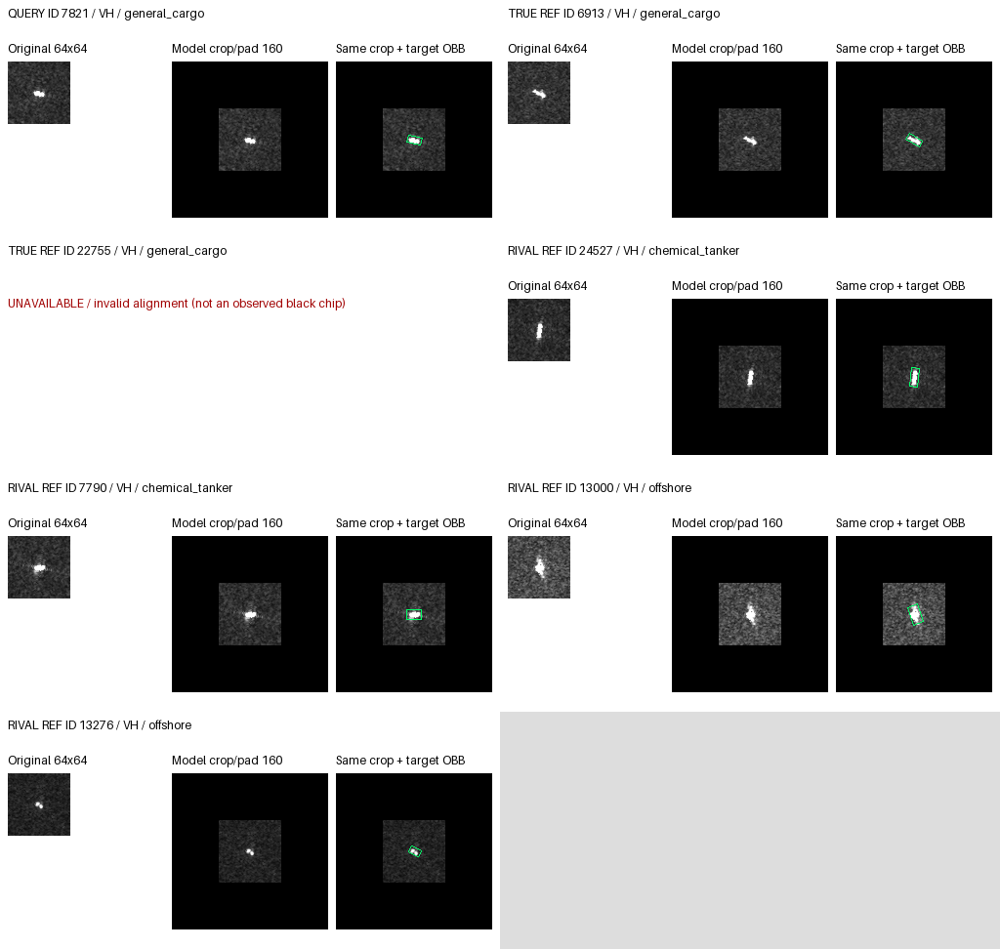

1. rescued / ID 7821 / seed 43
Truth: general_cargo; port: Jebel Ali; pass: S1A_062188_07C8BF; actual polarization: both; not_reviewed
| Seed | before: pred / true-top-rival margin / fixed margin | control: pred / true-top-rival margin / fixed margin | guided: pred / true-top-rival margin / fixed margin |
|---|---|---|---|
| 17 | general_cargo / 1.528676 / 1.528676 | offshore / -1.755179 / -1.755179 | general_cargo / 1.839391 / 1.839391 |
| 29 | general_cargo / 1.424977 / 1.424977 | offshore / -1.558891 / -1.558891 | general_cargo / 0.387062 / 0.387062 |
| 43 | general_cargo / 4.196494 / 4.532466 | offshore / -0.039523 / -0.039523 | general_cargo / 3.730528 / 3.730528 |
All logits, margins and actual reference IDs
{
"id": "7821",
"seed": 43,
"label": 2,
"class_name": "general_cargo",
"port": "Jebel Ali",
"pass_group": "S1A_062188_07C8BF",
"mmsi": "341860001",
"available": "both",
"state": "rescued",
"reference_prediction": 7,
"alternative_prediction": 2,
"fixed_rival": 7,
"reference_fixed_margin": -0.03952288627624512,
"reference_top_rival_margin": -0.03952288627624512,
"reference_NLL": 0.7573504874792748,
"reference_Brier": 0.5215955809322117,
"alternative_fixed_margin": 3.7305275797843933,
"alternative_top_rival_margin": 3.7305275797843933,
"alternative_NLL": 0.047659517434882406,
"alternative_Brier": 0.0031706273435185596,
"delta_fixed_margin": 3.7700504660606384,
"before_prediction": 2,
"before_fixed_margin": 4.5324660539627075,
"before_top_rival_margin": 4.196494087576866,
"control_prediction": 7,
"control_fixed_margin": -0.03952288627624512,
"control_top_rival_margin": -0.03952288627624512,
"guided_prediction": 2,
"guided_fixed_margin": 3.7305275797843933,
"guided_top_rival_margin": 3.7305275797843933,
"selection_category": "rescued",
"net_rescue_seed_events": 3,
"state_seed_counts": {
"rescued": 3
},
"scope": "expanded",
"visual_status": "not_reviewed",
"rival_classes": [
3,
7
],
"eligible_reference_ids": [
"34478",
"31512",
"14814",
"16401",
"6913",
"22755",
"24527",
"7790",
"36308",
"23719",
"29922",
"2077",
"12041",
"7429",
"13000",
"13276"
],
"true_reference_ids": [
"6913",
"22755"
],
"rival_reference_ids": [
"24527",
"7790",
"13000",
"13276"
],
"panels": {},
"per_seed": [
{
"seed": 17,
"conditions": {
"before": {
"prediction": 2,
"logits": [
-4.688534259796143,
-4.168999671936035,
3.5533034801483154,
0.6916777491569519,
-2.6916277408599854,
-9.334358215332031,
-2.794433116912842,
2.024627208709717
],
"fixed_margin": 1.5286762714385986,
"top_rival_margin": 1.5286762714385986,
"truth_rival_margins": {
"3": 2.8616257309913635,
"7": 1.5286762714385986
}
},
"control": {
"prediction": 7,
"logits": [
-3.341841459274292,
-2.774379014968872,
3.235841751098633,
1.6696289777755737,
-2.4113402366638184,
-7.511961460113525,
-1.6407932043075562,
4.991020679473877
],
"fixed_margin": -1.7551789283752441,
"top_rival_margin": -1.7551789283752441,
"truth_rival_margins": {
"3": 1.566212773323059,
"7": -1.7551789283752441
}
},
"guided": {
"prediction": 2,
"logits": [
-4.8306097984313965,
-4.365344524383545,
3.973771333694458,
1.057883620262146,
-3.1320745944976807,
-8.550939559936523,
-2.2976295948028564,
2.134380578994751
],
"fixed_margin": 1.839390754699707,
"top_rival_margin": 1.839390754699707,
"truth_rival_margins": {
"3": 2.915887713432312,
"7": 1.839390754699707
}
}
}
},
{
"seed": 29,
"conditions": {
"before": {
"prediction": 2,
"logits": [
-5.965956687927246,
-3.305293083190918,
2.783949136734009,
1.2361338138580322,
-0.061062902212142944,
-6.45147705078125,
-3.066826581954956,
1.3589719533920288
],
"fixed_margin": 1.42497718334198,
"top_rival_margin": 1.42497718334198,
"truth_rival_margins": {
"3": 1.5478153228759766,
"7": 1.42497718334198
}
},
"control": {
"prediction": 7,
"logits": [
-4.607854843139648,
-2.376960515975952,
2.7325925827026367,
1.5827839374542236,
-0.3649539649486542,
-6.378730773925781,
-1.6420782804489136,
4.291483402252197
],
"fixed_margin": -1.5588908195495605,
"top_rival_margin": -1.5588908195495605,
"truth_rival_margins": {
"3": 1.149808645248413,
"7": -1.5588908195495605
}
},
"guided": {
"prediction": 2,
"logits": [
-5.545260429382324,
-3.4496781826019287,
2.950228452682495,
1.3801928758621216,
-0.7556198835372925,
-6.645249366760254,
-2.221595525741577,
2.5631661415100098
],
"fixed_margin": 0.38706231117248535,
"top_rival_margin": 0.38706231117248535,
"truth_rival_margins": {
"3": 1.5700355768203735,
"7": 0.38706231117248535
}
}
}
},
{
"seed": 43,
"conditions": {
"before": {
"prediction": 2,
"logits": [
-4.105576515197754,
-5.2777252197265625,
3.9573888778686523,
-0.2391052097082138,
-2.627479076385498,
-7.102243423461914,
-4.098979949951172,
-0.5750771760940552
],
"fixed_margin": 4.5324660539627075,
"top_rival_margin": 4.196494087576866,
"truth_rival_margins": {
"3": 4.196494087576866,
"7": 4.5324660539627075
}
},
"control": {
"prediction": 7,
"logits": [
-3.1522724628448486,
-3.7292537689208984,
3.6202216148376465,
1.149981141090393,
-2.2142953872680664,
-6.460474967956543,
-2.19392728805542,
3.6597445011138916
],
"fixed_margin": -0.03952288627624512,
"top_rival_margin": -0.03952288627624512,
"truth_rival_margins": {
"3": 2.4702404737472534,
"7": -0.03952288627624512
}
},
"guided": {
"prediction": 2,
"logits": [
-4.415273666381836,
-5.382080554962158,
4.2680277824401855,
0.4953182339668274,
-2.642721652984619,
-7.151061534881592,
-3.147524356842041,
0.5375002026557922
],
"fixed_margin": 3.7305275797843933,
"top_rival_margin": 3.7305275797843933,
"truth_rival_margins": {
"3": 3.772709548473358,
"7": 3.7305275797843933
}
}
}
}
],
"selection_rule": "Select up to eight unique expanded guided-control queries using the full-stage helper: net rescue/harm across seeds and consistent CC/WW, up to two each; rank by net event count, absolute fixed-rival margin change and ID, with partial-polarization coverage when available. Fill absent categories by transition/margin; categories absent in the results are not invented. Representative seed maximizes absolute margin change within the selected state. These outcome-selected cases do not estimate population prevalence."
}VV

VH
